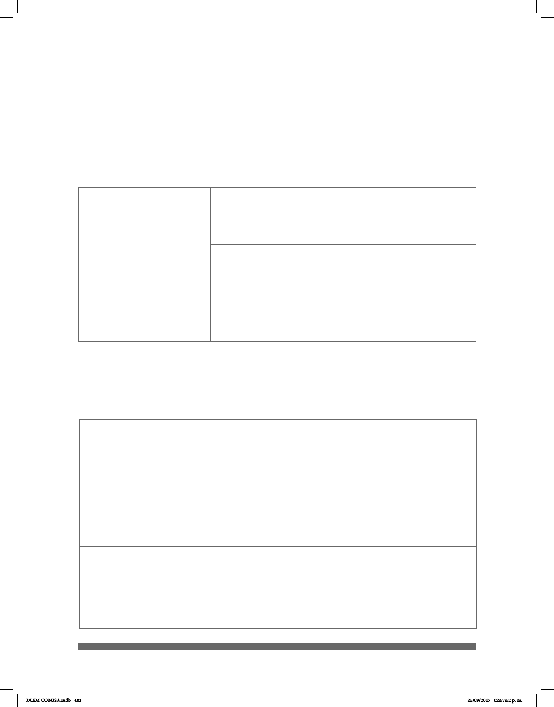

483
Artículo 1021. Cuando alguno de los interesados no puedan
hablar u oír, no hablen español, pertenezcan a una comunidad in-
dígena, o se encuentren con alguna discapacidad que les impida
comunicarse ecazmente, el Juez ordenará que se le formulen o
responda las preguntas o contestaciones por escrito o por medio de
un intérprete,…
Artículo 1516. El que fuere enteramente sordo; pero que
sepa leer, deberá dar lectura a su testamento; si no supiere o no
pudiere hacerlo, designará una persona que lo lea a su nombre.
Artículo 1515. Los que fueren mudos o sordomudos, pero
que puedan leer y escribir expresaran su voluntad al notario por
escrito, en presencia de dos testigos. El notario redactará por es-
crito las cláusulas del testamento sujetándose estrictamente a la
voluntad del testador,…
Código Civil para la Ciudad de México
DE LA SUCESIÓN
TESTAMENTARIA
Artículo 1502. No pueden ser testigos del testamento:
I – VII
Las personas con capacidades diferentes relativas a ceguera
total o parcial, sordera, mudez o ambas, podrán ser testigos de un
testamento con el apoyo de un intérprete pagado por el testador.
El Código Civil, se sabe, es un conjunto unitario, ordenado y sistematizado de normas
de Derecho privado cuyo objetivo es regular la actividad privada o las relaciones civiles
tanto de las personas físicas, jurídicas, privadas o públicas.
El caso del Código Civil para el Distrito Federal fue publicado en el Diario Ocial de la
Federación el 26 de mayo de 1928. Última reforma publicada en la Gaceta Ocial del
Distrito Federal: 05 de febrero de 2015.
Código de Procedimientos Civiles para la Ciudad de México
TÍTULO DÉCIMO SÉPTIMO
DEL JUICIO ORAL CIVIL
El Código de Procedimientos Civiles para el Distrito Federal está publicado en el Diario
Ocial de la Federación del 26 de mayo de 1928, con una última reforma publicada en
la Gaceta Ocial del Distrito Federal de fecha 9 de junio de 2014.
Artículo 972. Quienes no puedan hablar, oír o no hablen es-
pañol, formularán sus preguntas o contestaciones por escrito o por
medio de un intérprete, que se designará de entre aquellos autori-
zados como auxiliares de la administración de justicia o por cole-
gios, asociaciones, barras de profesionales o instituciones públicas
o privadas. Los intérpretes al iniciar su función serán advertidos
de las penas en que incurren los falsos declarantes y sobre su obli-
gación de traducir o interpretar elmente lo dicho.
En caso de que una de las partes o ambas tengan alguna dis-
capacidad visual o auditiva, será obligación del juez ordenar la
asistencia necesaria en materia de estenografía proyectada.
TÍTULO DÉCIMO OCTAVO
DEL JUICIO ORAL
EN MATERIA
FAMILIAR
DLSM COMISA.indb 483 25/09/2017 02:57:52 p. m.